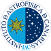
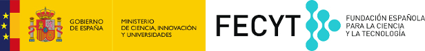

{% if site.author-name %}{{site.author-name}}{% else %}Contadores de estrellas{% endif %}
{% if site.about-author %}{{site.about-author}}{% else %}Universidad Politécnica de Madrid & Instituto Astrofísico de Canarias.{% endif %}
De los creadores del proyecto Cazadores de Asteroides llega ahora Contadores de Estrellas.
Correo electrónico: proyectocontadoresdeestrellas@gmail.com
{% include social_footer.html %}
 
Proyecto financiado por la FECYT: Fundación Española para la Ciencia y la Tecnología